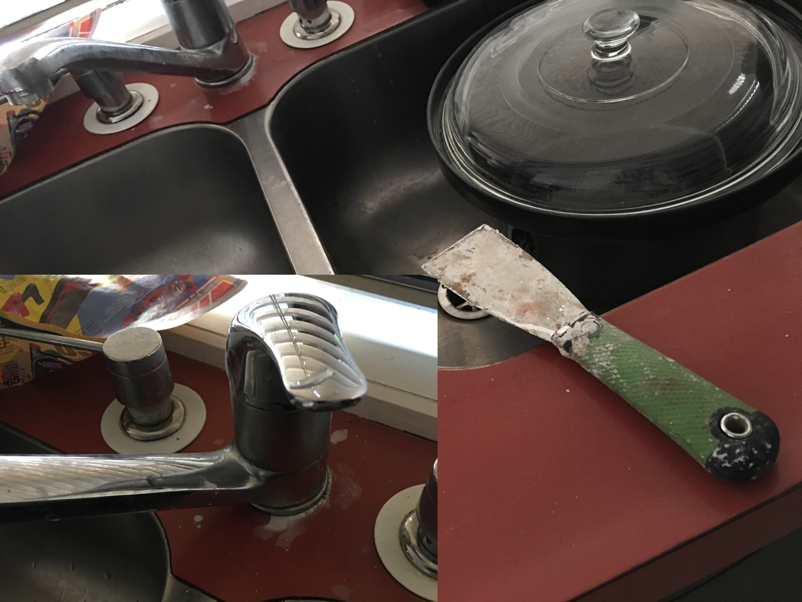

This is our story of struggle with Tower Insurance. We now understand that deceptions and denials are universal across many insurance companies here and abroad. We sincerely hope that this is not your story, and it never will be. We are sharing our story to help you make informed decisions about insurances and insurance companies.
A burst water pipe in the ceiling caused serious damage to a large portion of our house. The incident happened in November 2017, and the house is still uninhabitable. Both the insurance company and their two subcontractors (Asset Managers and Absolute Building Solutions) have been well below acceptable standards in the reinstatement work, and the house was left in a much worse condition than it was soon after the flooding incident. The subcontractors have damaged a number of the house content as well.
There were three subcontractors involved: one to dry the house, and two for reinstatement work. JAE, who were there to dry the place, was professional. The insurance instructed JAE to leave before the house was completely dry: the house had a moisture content five times the acceptable limit when JAE was asked to leave. Insurance stated that the builder will open the walls to dry the house out, but after JAE left the insurance got the builders to plaster and paint the still-wet house. We discovered that the moisture level in the house was still deemed high in some parts as late as May 2018 and JAE was brought back in the second time to dry these areas. In the meanwhile, there are cracks and peels in the new paint. Work carried out in the bathrooms have been non-compliant (holes in the wall, water-proofing not applied correctly, incorrect GIB used) but the insurance reiterated compliance and high-quality workmanship until an independent building surveyor questioned these.
The subcontractors (Asset Managers and Absolute Building Solutions) have damaged a large number of items: many of the internal doors have been chipped; walls have been incorrectly plastered/painted; the bath was not protected during work and has been covered in paint and plaster; the shower drain was filled with broken tiles and cement because it was left open; many of our personal content have been abused (for instance, toilet was placed on one bed, and toilet mats were placed on the other bed; our food processor was used to mix cement; a solid-wood bookshelf was used as a sawhorse and subsequently damaged).
Tower, as one might expect, is unwilling to accept any liability. Their tales get stranger by the day! The sad part is that the damages Tower has caused can be fixed, it is just that Tower isn't willing to fix them.
Even though Tower had not fulfilled their policy obligations, Tower decides not to renew our house insurance when it is up for renewal. The house is not habitable, and until then no other insurance company would insure it.
Fighting an insurance company takes time. An awful amount of time. And Tower knows this, and the timeline below shows it.
A burst water pipe in the ceiling floods our house during the day.
JAE, drying company contracted by Tower, started the drying process in the morning. They removed the carpet to help with the drying process and discarded it with Tower's permission. (Months later Tower is to deny that the carpet was ever removed, and refuse the replacement cost.)
The drying process was stopped by Tower, stating that the drying was not effective and their builders will remove the wall Gibs to expedite the drying process. When JAE left the house the moisture level readings in the house were five times higher than the accepted threshold values – something we understood later in the piece. Moisture levels are to remain high for another five months to come.
Private plumbers start replacing old pipework. Tower was happy to have us do this work before reinstatement commenced. The following day, the plumbers cut a few tiles in the bathrooms, thereby damaging the water-proofing. This required water-proofing to be re-done and the plumbers ask their insurance company to fix this.
Asset Managers, Tower's building contractor, commence reinstatement work in lieu of the original water damage. They do not open any walls. There was no moisture measurement taken before this reinstatement work.
Keith McDonald, Tower's assessor, visits the house to assess the damage in bathrooms.
Asset Managers had damaged a number of doors during the reinstatement process, and
the plaster and paint work was substandard. In addition, they broke the key to the
main door, and then to have continued access to the house, they "broke" the garage
door mechanism so that it can be opened from outside, effectively leaving the house
unlocked when they were leaving for the day. Keith is shown all of this, and he
assures to bring this up with Asset Managers.
Asset Managers confirm that they have completed the work, but none of the damages they caused have been fixed. Nor have they remedied the substandard laster and paint work.
Asset Managers ask us to collect the house keys from their office in East Tamaki. When we go there, we are told that the keys are "securely stored" on-site (i.e., at our house) with a combination lock. Anton Tallot, the boss of Asset Managers, accompany us to the site to unlock the combination and retrieve the key. We then understand that there was no lock, no comination, the keys were left under the flower pot, and were nowhere to be found. The following day Anton texts to say that he will pay for the replacement of all locks of the house as they have lost the set of keys.
Tower contracted Tony Gamble from Absolute Builders to fix the bathrooms damaged by the plumbers. Tony starts the reinstatement work.
The bathroom reinstatement work and water-proofing is seen to be non-compliant. Besides, Tony had been using our personal belonging during his work: he used our kitchen blender to mix cement, and had been washing plaster and paint down the kitchen sink. We write to Tower to remedy these.
Tower's Keith Macdonald and Ross Hailday along with their subcontractors visit the house (without us, even though we wanted to be involved in the inspections), and subsequently write to us: "We inspected the waterproofing on Monday the 19th and the waterproofing is to a high standard and correctly installed. The waterproofing is applied correctly, with an access space allowed for entry under the spa bath."
We engage Mr Gary Chalk, an independent building surveyor, to provide independent expert advice on the remedial works by Tower's two subcontractors.
Tower's Keith Macdonald and Ross Hailday visits the property
with their building consultant to meet with Gary Chalk and us,
and resolve the issues.
A number of issues come to light from hereon. No moisture measurements
were taken before reinstatment work began. Gary points out the moisture
level in the house is still high – which explains why the new paint
is cracking and peeling off.
Water-proofing applied poorly. The bath should have been taken out before
water-proofing but it was not, and was damaged by spills and excess water-proofing.
Gaping holes were left in the wall, or taped over and water-proofed.
The Gibs were poorly screwed to the timber, and therefore not strong enough to hold
tiles.
Tower brings JAE in to do moisture measurements, and some areas of the house
are found to have moisture levels above acceptable limits (after all these months
with a hot summer in between). Foil-backed Gib does not let the moisture dry easily unless
opened up – something Gary pointed out to us. Asset Managers did not open any walls,
and did not bother checking moisture levels either.
JAE bring heaters and dries the places for nearly a week.
Tower is keen to bring their contractors back in to "fix", but given the mess they created, we opt to go for a cash settlement so that we can bring a reliable builder. Tower offers us $21,500. We had two quotes and these are around $80,000 for labour – with everything considered, the total cost of getting the house back to how it was before the damages is around $149,000. We point these out to Tower who update the scope of work, but not the cash sum they were prepared to offer.
Tower makes a revised offer after bringing in their builder for assessment and backing down from their previously proposed scope. Their revised offer is $55,700. We note that their buider's quote is unrealisitic especially for reinstating the two bathrooms. In addition, none of the material costs and the carpet reinstatement costs are included. When we point this to their solicitor, Tower chooses to ignore it. We reject the offer.
We complain to the Building Practioners Board that oversees the licensed building practioners scheme about poor workmanship and non-compliance by Tony Gamble.
Tower tells us that our insurance policy will not be renewed when it comes for renewal in March. No other insurance company will insure it either since the house is not habitable.
Tower pays $55,700 into our bank account, and their solictor says that it was no "hush" money and initiates a deadlock process which requires us to talk to IFSO if we wanted anything more.
We laid a complaint with the Insurance and Financial Services Ombudsman (IFSO).
Building Practioners Board arranges a hearing on Tony Gamble of Absolute Building Solutions. Tony admits incorrect water-proofing and incorrect installtion of Gib walls. The walls need to be stripped down, rebuilt, and new water-proofing applied. The Board finds that these shortfalls are not serious enough to impose a penalty on Tony.
Newsroom publishes our story so far. Stuff re-publishes the story the following day.
We are still waiting for closure ... we aren't counting months anymore.
A kitchen blender for mixing grout and cement? A licenced building practioner, Tony Gamble, couldn't have thought of a better idea. The only problem was that the blender is ours — not something Tony brought from his company.
When we told Tower to tell their contractors to stop using the kitchen sink to wash down paint and cement, this is what Tower's Keith McDonald had to tell us: "A painter's knife sitting on the bench does not constitute that the sink has been used for cleaning purposes." The contractors were working in the bathrooms and had no need to go to the kitchen.

Tony Gamble of Absolute Builders used our Rimu bookshelf as a sawhorse. Tower agreed to replace it initially, and when they figured out it is quite expensive they said they can only contribute 50% of the cost according to our contents policy — a policy we never had.
"Insurance doesn't work when the insurance company fails to honor the terms of the policy and its promise of security through the strategy that has become known as delay, deny, defend . The company delays payment of a claim, denies all or part of a valid claim, or aggressively defends litigation the policyholder is forced to bring to get what he is rightfully owed. When insurance doesn't work, the consequences are more severe than when any other kind of company fails to keep its promise. If a homeowner hires someone to paint his house and the painter never shows up, the homeowner can take his money and hire someone else. If the insurance company refuses to pay a claim, it is too late to go elsewhere for another policy; no company will write a policy that will pay for fire damage that has already occurred."
For the insurance companies, it pays to sit on their back and do nothing.